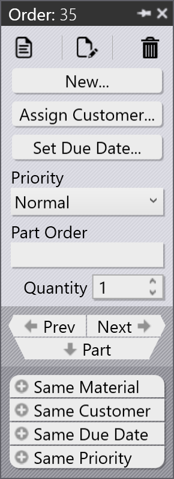

Ordrar
En order definierar vilka delar som behöver tillverkas, i vilken kvantitet och till vilket datum. Den styr produktionsplanering och genomförande i TruSmartCAM. Ordrar kan skapas eller importeras med olika metoder och de kan konverteras till jobb för produktionsplanering.
Orderpanel
 |
|


Redigera ordrar
Välj en eller flera ordrar och högerklicka för att ändra gemensamma orderdetaljer såsom kvantitet, förfallodatum, prioritet och kundinformation.
Om flera valda ordrar kräver olika värden, använd alternativet Check-out for Editing för att redigera varje order individuellt baserat på kravet.


Alla uppdateringar som görs på ordrarna tillämpas omedelbart på databasen. Använd kommandot Radera för att ta bort ordrar från orderbiblioteket.
| Kommandot Delete tar bara bort ordrarna. Delar som är länkade till de respektive ordrarna tas inte bort från delbiblioteket. |
Planera ordrar
Välj en eller flera ordrar, högerklicka och klicka på Ny… → Jobb för att konvertera de valda ordrarna till jobb. Använd alternativen Sortera och Filtrera för att gruppera relevanta ordrar innan jobbet skapas.

När ordrarna har konverterats till ett jobb:
-
Jobbet flyttas till sidan Jobb
-
Ordrarna tas bort från orderlistan
-
Det standardiserade arbetsflödet för jobbplanering kan sedan användas för produktionsplanering och nästling

För mer information om arbetsflöde för jobbplanering, se Auto Plan
Ytterligare information
-
Om ett jobb som innehåller ordrar tas bort, flyttas de associerade ordrarna automatiskt tillbaka till sidan Ordrar klara, såvida inte jobbet eller delen är markerad som Slutförd.

-
Ordrar kan läggas till eller tas bort från ett befintligt jobb via fönstret Redigera jobb baserat på produktionskraven.